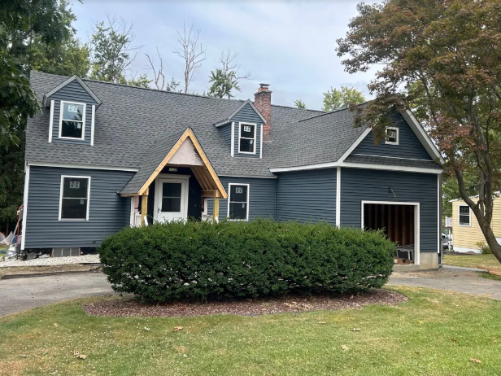
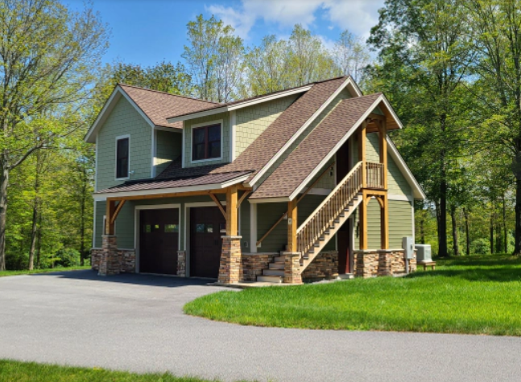
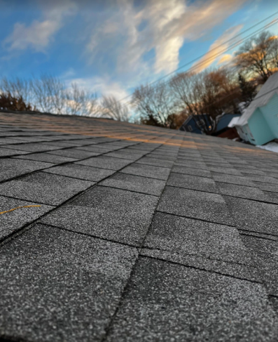
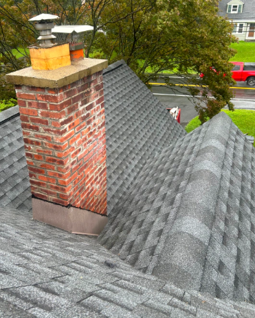
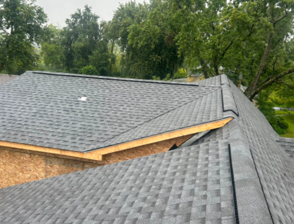

Roofing & masonry / Connecticut
Built to
weather it.
Strong roofs. Sound structures. From a roof replacement to a concrete wall repair, give your home the attention it deserves.
at a stronger home
Roofing.
Masonry.
Peace of mind.
Built around your home
Every part.
Considered.
A small leak and a worn roof need different conversations. Start with the part of your home that needs attention.

Protection begins
with the details.
01 /START FRESHRoof replacement
When it’s time for a new roof, start with a clear picture of the existing one. Discuss its condition, material options, and the work your home needs.
Plan a roof replacement02 /ADDRESS THE PROBLEMRoof repair
A leak, damaged shingles, or a concern around the chimney is a reason to take a closer look. Share what you’ve noticed and ask whether a focused repair is suitable.
Discuss a roof repair03 /LOOK BELOW THE SURFACEMasonry & concrete
Cracks, moisture, and damaged masonry deserve a considered assessment. Outline concerns about concrete walls, brickwork, or the areas where your roof and masonry meet.
Discuss masonry or concreteA closer look
Good work is
in the details.
Rooflines, shingle textures, and the meeting of materials. Explore the photographs supplied for this concept.
{kind=link}
A home, from the top down.
{kind=link}

A different perspective.
{kind=link}

Where materials meet.
{kind=link}

Every stage matters.
{kind=link}
The whole picture.
Photographs supplied for this independent concept. Project scope, locations, and authorship have not been independently verified.
Clarity before commitment
The right work.
For the right reason.
Inspection, repair, and replacement are different paths. The condition of your home should guide the conversation.
Understand
Start with
an inspection.Explain the issue, where it appears, and when you first noticed it. Ask for an assessment of the affected area.
Consider
Look at
your options.Discuss a repair or replacement, the proposed scope, and what needs further investigation before deciding.
Decide
Agree on
the next step.Confirm the work, cost, and timing directly with the contractor before making a commitment.
Before you begin
A little
more clarity.
A few useful starting points for your project.
Does every damaged roof need replacing?
The right approach depends on the roof’s condition and the extent of the damage. An on-site assessment is the place to discuss whether a focused repair or replacement is suitable.
Can I ask about concrete wall repairs?
Yes. Choose “Masonry & concrete” in the project planner and describe what you have noticed. The contractor will need to assess the wall and confirm the appropriate scope.
What should I include in my project notes?
Include the type of work, your town, what you can see, when it started, and your preferred timing. Share existing photographs directly with the contractor if requested.
Does this website book an inspection?
This is an independent website concept. The planner creates notes for you to copy or download; it does not send a request or book an appointment. Use the linked business listing to contact the contractor and confirm service availability.
Your home. Your next chapter.
Let’s start
with your home.
A new roof. A problem worth a closer look. A repair you’ve been putting off. Put your thoughts together here.
View the business on Angi (opens in a new tab)Contact and availability are confirmed through the business listing. No request is sent from this concept.
Your project notes are ready.
Review these notes, then copy or download them to share with the contractor. Nothing has been sent.
Continue to the business listing (opens in a new tab)